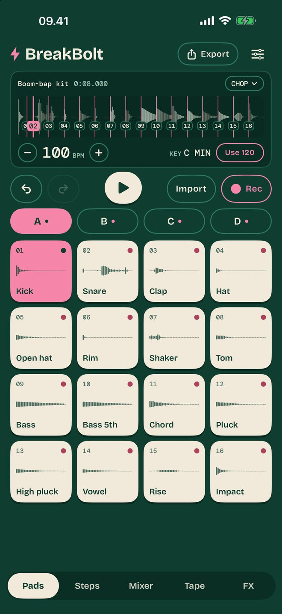
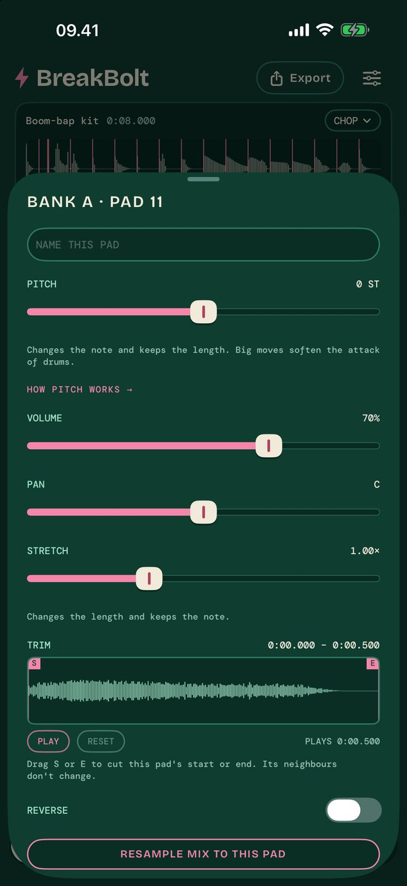
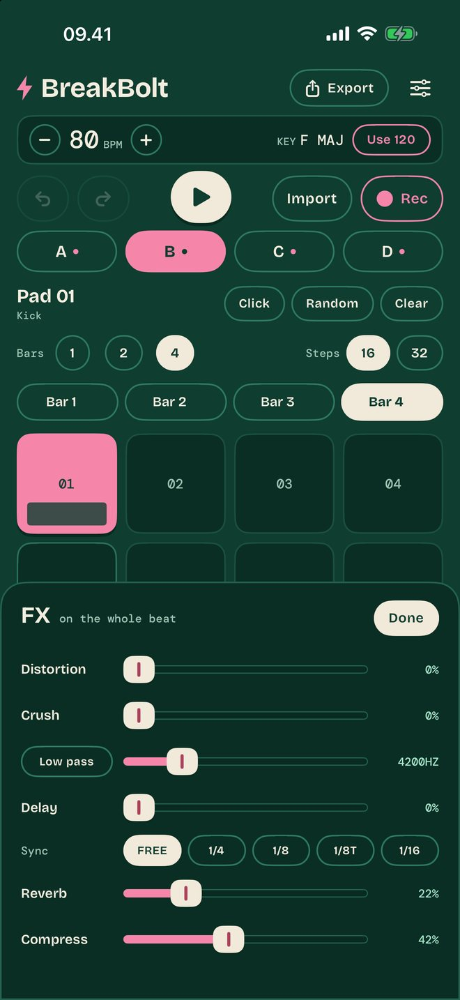
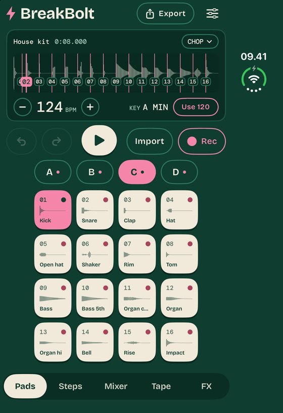

BEATMAKER · IPHONE & IPAD · BETA
Signal in.
Beat out.
Open it and play: four kits are already loaded, one style in each bank. Then record a sound, import one, or pick from 2,259 included. BreakBolt chops it across 16 pads and finds its key and tempo, so the pads are ready to play as soon as the sound loads.

The Boom-bap kit, ready to play on first launch.
HOW IT WORKS
From one sound to a beat
Four moves from an idea to a finished loop, with the starter kits or any sound of your own.



FEATURES
Everything in the app
All of it comes with the one price, including every sound pack.
Four style kits, ready to play
Boom-bap in C minor, lo-fi in F major, house in A minor, garage in D minor. Every pad is named: Kick, Snare, Hat, Bass, Chord.
Chop it three ways
Equal slices, slices on every hit, or slices on the detected tempo. Drag any cut by hand, zoomed in up to 8×.
It knows the key and tempo
Scale Lock keeps pitched pads in the sample's key. The detected BPM is one tap from becoming your tempo.
Every pad is an instrument
Pitch, stretch, reverse, volume, pan and a name for each of 64 pads. Trim one pad without moving its neighbours, or delete it.
Longer patterns
1, 2 or 4 bars with 16 or 32 steps a bar. Swing, gate and velocity per step. Timed on the audio clock, so it holds while you lock the phone.
A mixer for every pad
Fader, pan, mute and solo on all 64 pads. Mutes are saved with the project and left out of exports.
A tape to play into
Record five minutes of what you play, overdub, loop a stretch between In and Out, slow it, brake it, stutter it, and chop it back onto the pads.
Six effects
Distortion, bit-crush, filter, tempo-synced delay, reverb and a one-knob compressor on the whole beat.
2,259 sounds, all included
48 built in plus 72 packs of kicks, bass, percussion, melodic and FX, downloaded one pack at a time.
Resample, then go again
Record one bar of everything playing, effects included, onto a pad and build the next layer on top.
Exports that loop cleanly
A WAV exactly one loop long for any DAW, a live take, or a vertical video for short-form posts.
iPhone, iPad and Duo, light and dark
Every iPhone size, an inspector beside the page on iPad, both screens of iPhone Duo, and the instrument in deep green or cream. Unlimited projects, 50 steps of undo.
ON EVERY SCREEN
iPhone, iPad and iPhone Duo
The same instrument on every screen. On iPad the whole pattern sits in one grid; open an iPhone Duo and the chop tools move beside all 16 pads.



THE PROMISES
Price, privacy and your work
Price
Pay once
Every sound pack is included, including packs added later. No in-app purchases.
Privacy
On your device
No sign-in, no analytics, no tracking. Recordings leave the phone only when you share them. Privacy policy.
Safety
Saved as you go
It saves itself continuously, reopens where you left off, keeps playing in the background, and handles calls and headphone swaps cleanly.
BETA
Help shape it on TestFlight
BreakBolt is in beta. Testers get the app free through Apple's TestFlight, try it for fifteen minutes, and tell us what confused them and what's missing. That feedback decides what gets built next.
Open the link on your iPhone or iPad. It installs TestFlight if you don't have it, then BreakBolt. Places are limited, so if the beta is full, check back for the next round.
Questions? marian@appsbymarian.dk
What you need
An iPhone or iPad on iOS 17 or later, and Apple's free TestFlight app. No account with us.
Already testing?
Tell us how it went in the five-minute beta survey.
New to it?
The BreakBolt guide covers every feature in the order you make a beat.